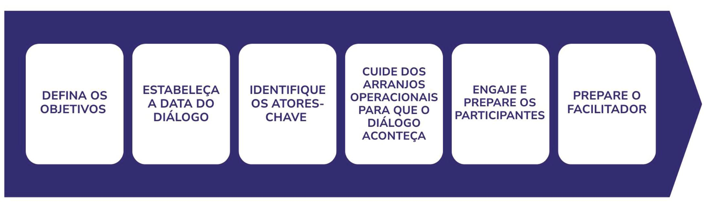

Módulo 3 | Aula 3
Os diálogos deliberativos: definição e desenvolvimento
Preparação de um diálogo deliberativo
Para que um diálogo deliberativo aconteça é necessário primeiramente responder às seguintes questões: Quais são os objetivos do diálogo? Quem participará? Como será organizado? O que é necessário ser feito após sua realização?
A preparação de um diálogo envolve diversas etapas em que equipe organizadora, facilitador e participantes devem trabalhar voltados para um mesmo objetivo, estabelecendo as bases para o sucesso do diálogo. Veja na figura 1 as diferentes etapas.
Figura 1 – Etapas da preparação do diálogo deliberativo

Fonte: Adaptado de Biermann; Kuchenmueller; Nguyen.
Explore os slides a seguir para conhecer cada etapa da preparação:
Relatoria do Diálogo Deliberativo
A relatoria desempenha papel essencial durante o diálogo deliberativo, sendo responsável por registrar de forma sistemática as principais ideias, perspectivas, convergências, divergências e questões levantadas pelos participantes. O registro deve refletir o conteúdo da discussão sem atribuir opiniões a pessoas específicas, respeitando as regras previamente estabelecidas, como a Regra de Chatham House.
Você pode saber um pouco mais sobre a Regra Chatham House.
Após o diálogo, essas informações subsidiam a elaboração do relatório do diálogo deliberativo, documento que sintetiza os principais pontos abordados, os fatores que podem favorecer ou dificultar a implementação das opções apresentadas e os encaminhamentos considerados relevantes pelos participantes. O relatório deve utilizar linguagem simples e objetiva, preservando os objetivos do diálogo e servindo como instrumento para apoiar os processos de tomada de decisão, além de subsidiar a devolutiva aos participantes e outras ações de tradução do conhecimento.
A ética deve ser uma questão que perpassa todas as fases do diálogo deliberativo. Portanto, garanta que o processo seja conduzido com eticidade. Lembre-se de garantir um ambiente seguro e confortável para os participantes. Envie também o Termo de Consentimento Livre e Esclarecido (TCLE), caso o diálogo faça parte de uma pesquisa, assim como o Termo de Cessão de Uso de Direito de Imagem e Voz.